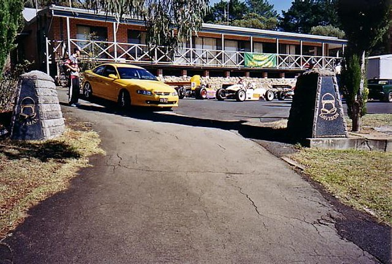
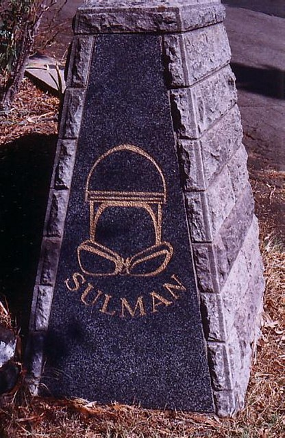
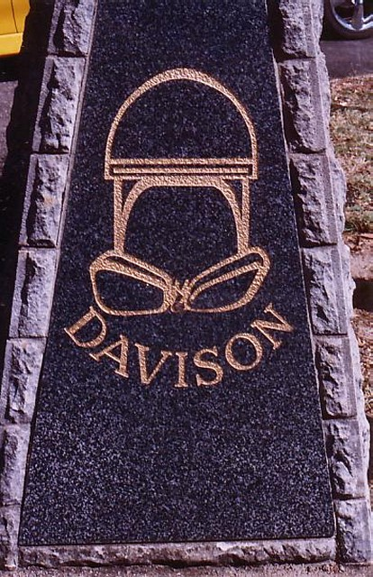
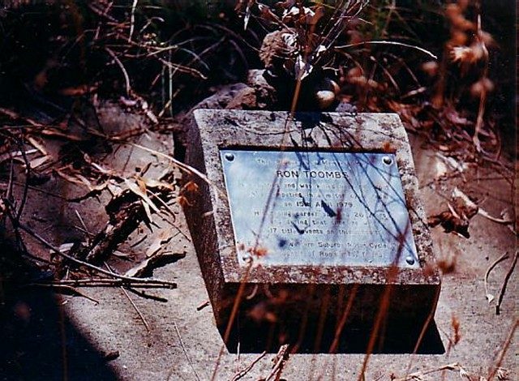

The Motorsport Memorial website
Motor Sport Monuments and Memorials - Mount Panorama, Australia
 |
||
|  |  | |
Photos ©2005 Mark Taylor |
||
| The Bathurst Light Car Club clubrooms are up near the top of Conrod Staight, just above the kink. The main gate honours two iconic Australian motor racing figures. Tom Sulman died in an accident at the bottom hump on the Conrod Straight in 1970, having raced motorcycles and cars for over fifty years. Lex Davison is the only four-time winner of the Australian Grand Prix (including one at Bathurst in 1958). He was killed in practice for a Tasman Series race at Sandown Park in 1965. He won the Australian Hillclimb Championship in 1955, 1956 and 1957, the 1956 event being held here on the Esses Hillclimb. | ||
 |
Photo ©2005 Mark Taylor |
| The plaque to Ron Toombs is a bend or so above Forrest's Elbow. The plaque inscription
reads: This plaque is in memory of RON TOOMBS He crashed and was killed near this point Erected by Western Suburbs Motor Cycle Club |
The Motorsport Memorial website